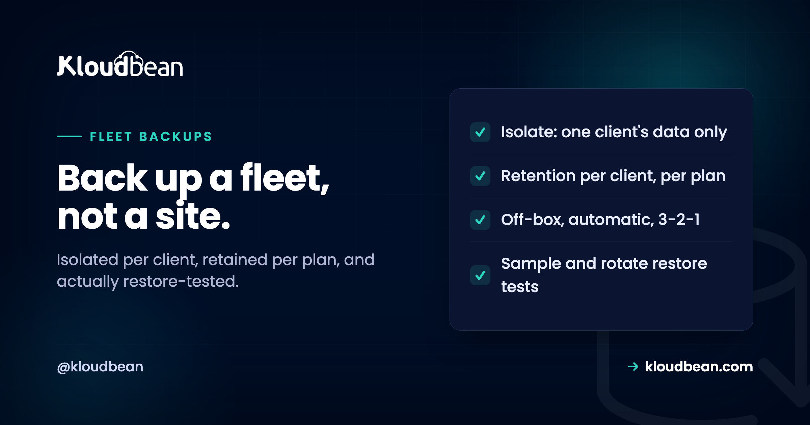

Multi-Client Backup Strategy: Backing Up a Fleet, Not a Site

Backing up a single website is a solved problem, and the server backups guide covers the fundamentals: keep copies off the box, follow 3-2-1, and test that a restore actually works. This page assumes all of that and asks the harder question an agency faces: what changes when it is not one site but twenty clients? At that point three new problems appear that a single-site backup never has to solve, and getting them wrong is the difference between a backup that reassures a client and one that quietly leaks another client's data during a restore.
It is the discipline of backing up an agency's whole fleet of client sites so that three things hold at once. First, isolation: each client's backup contains only their data, and restoring one client can never touch another. Second, per-client retention: different clients keep different history, driven by their contract, not one global setting. Third, restore testing at scale: since you cannot fully test twenty restores every week, you sample and rotate so every client's restore gets exercised over time. On top of the usual off-box, 3-2-1 fundamentals, those three are what make backups safe across a fleet rather than just present.
What changes when it is a fleet
A single-site backup answers one question: can I get this site back? A fleet backup has to answer three more, and they are the ones that bite.
| Single site asks | A fleet also asks |
|---|---|
| Can I restore it? | Can I restore one client without touching the others? |
| How long do I keep backups? | How long per client, given each has a different contract? |
| Did the restore work? | Did it work for all twenty, and when did I last check each? |
None of these is exotic, but all three are invisible until the day they matter, and the day they matter is a restore under pressure. The whole strategy is about making those three answers boring in advance.
Isolation: one client's backup is only theirs
This is the one that turns a backup into a liability if you get it wrong.
If your fleet lives as one big pile, with all clients' files under one tree and all databases in one instance, then a single backup blob contains everybody. That seems efficient until you restore. Restoring "the backup" to recover Client A now risks overwriting Client B's more recent data, and handing Client A a copy of the backup, say during an offboarding, hands them Client C's database too. A mixed backup is a privacy incident waiting for a restore to trigger it.
The fix is structural and it starts before backups: each client is an isolated environment with its own files and its own database, the same isolation that keeps multiple apps on one server from interfering. When each client is isolated, their backup is naturally theirs alone: you can restore one without the others noticing, and you can hand one client their complete data with nothing of anyone else's in it. Backup isolation is a consequence of hosting isolation, which is why the two decisions are really one.
Retention is per client, not one global dial
A single site has one retention policy. A fleet has as many as it has contracts, and treating retention as one global setting either overspends on storage or under-protects the clients who need history.
A client on a full care plan may be entitled to weeks of daily history and a long tail of monthly snapshots. A one-off brochure site you host as a favour needs far less. An ecommerce client mid-dispute may need you to hold a specific point in time longer than usual. So retention is a policy you set per client, ideally mapped to their plan tier, rather than a number you pick once for everyone. The billing tiers are a natural place to anchor it: the retention a client gets is part of what their plan buys.
Two guardrails keep this sane. Do not keep everything forever "just in case", because a former client's data you no longer need is a liability, which is exactly the retention-then-delete rule from offboarding. And do not let a generous retention promise outrun where the backups actually live: long history is only real if it is stored off-box, which is the next point.
Off-box, per client, and 3-2-1 still applies
Everything the single-site guide says about keeping backups off the machine they protect applies to every client, not as an afterthought but per client.
A backup that sits on the same server as the site dies with that server, whether it is one site or twenty. So each client's backups belong off-box, in object storage that is separate, durable, and outside the blast radius of the server. S3-compatible object storage, or managed GCS buckets, is the usual home, and the same 3-2-1 thinking from the backups guide holds: more than one copy, more than one medium, at least one off-site. The fleet twist is only that you are doing it many times, so it needs to be automatic rather than a thing you remember per client. Automatic backups running per environment, shipped off-box, is the baseline the rest of this strategy sits on.
The restore drill you can actually sustain
Here is the honest constraint nobody admits: you cannot fully test twenty client restores every week. A test restore takes real time and attention, and doing it for the whole fleet on every cycle is not sustainable, so agencies either test nothing or pretend to test everything.
The workable answer is sample and rotate. Each cycle, fully test the restore of a different client, so that over a rotation every client's backup gets exercised. It looks like this:
Week 1: full test restore of Client A -> record pass/fail + date
Week 2: full test restore of Client B -> record pass/fail + date
Week 3: full test restore of Client C -> ...
...rotate through the fleet, then start again.
Always: verify the backup JOB succeeded for ALL clients (automated check),
even on the clients you are not fully restore-testing this week.Two layers, and the distinction matters. Every client gets an automated check every cycle that the backup job ran and produced a file of a sane size, which is cheap and catches the common "backups silently stopped" failure. On top of that, one client per cycle gets a full restore actually stood up and verified, which is expensive but is the only thing that proves a backup is restorable rather than merely present. Rotate the expensive test so every client is covered over time, and keep a log of when each was last proven.
Your backup is also a client-retention asset
At fleet scale the backup stops being purely operational and becomes something you can sell and prove.
"We back up your site" is a claim every host makes. "Your site's last full restore test passed on the 3rd, and here is the log" is a different level of trust, and it is exactly the kind of concrete assurance that keeps a client on a care plan through a renewal. Keeping a simple record of each client's last successful backup and last proven restore turns your discipline into a visible benefit rather than invisible plumbing. On enterprise engagements, the Audit Trail provides an immutable record of that activity; on any plan, even a maintained log is worth more to the relationship than the client ever realises until the day they need it.
Which part of this is the host's job
Most of this strategy is discipline, but the platform decides how much of it you have to do by hand. On Kloudbean each client is an isolated environment, so backups are naturally per client rather than one mixed blob, which is the isolation the whole strategy depends on. Automatic backups run per environment without you remembering, and they ship off-box to S3-compatible object storage or managed GCS buckets so a dead server does not take the backups with it. It all sits in one dashboard, so checking that the backup job ran across the fleet is one place rather than twenty logins. Seven clouds to spread clients across, and free migration assistance when you bring a new client's site in to fold into the same routine.
The honest boundary: the platform provides isolation, automatic backups, and off-box storage. The retention policy per client, the sample-and-rotate restore schedule, and the discipline of actually running the test are yours. A backup that is never restore-tested is a hope, not a strategy, and no platform can test it for you, only make the test easy.
Around multi-Client Backup Strategy
The fundamentals this page builds on are in the server backups guide (3-2-1, off-box, test the restore). The isolation it depends on is hosting multiple apps on one server, and the retention-then-delete rule is agency client offboarding. Retention maps to plan tiers in client billing and markup. The wider operation is the hosting for agencies playbook and how agencies host 20 client apps on one server. Off-box storage itself is S3-compatible object storage.
Stop paying a platform per client.
Host client apps as isolated applications on servers you own, each with its own database and SSL, with per-app backups and Git deploys, and scoped access for teammates through subusers and user access control.
- ✓ One dashboard
- ✓ Per-client isolation
- ✓ Subusers and access control
- ✓ Per-app backups
- ✓ Git deploys
- ✓ Free migration assistance
FAQ
What is a multi-client backup strategy?
It is how an agency backs up a whole fleet of client sites so that each client's backup is isolated to their data, retention is set per client rather than globally, and restores are tested by sampling and rotating through the fleet. It sits on top of the usual off-box, 3-2-1 fundamentals, and its goal is to be able to restore any one client quickly and cleanly without affecting the others.
Why should each client's backup be isolated?
Because a single backup containing every client's data is a privacy and compliance risk that a restore triggers. Restoring one client from a shared blob can overwrite another's more recent data, and handing a client a copy of it, during offboarding for example, leaks everyone else's data too. Isolated per-client backups let you restore or hand over one client without touching any other, and that isolation follows naturally from hosting each client in a separate environment.
How long should an agency keep client backups?
Per client, according to their plan and contract, rather than one global number. A care-plan client may warrant weeks of daily history and a longer tail of monthly snapshots, while a simple brochure site needs far less. Map retention to your billing tiers, avoid keeping former clients' data indefinitely because that becomes a liability, and make sure long history is stored off-box so it is actually real.
How do you test restores across many client sites?
Sample and rotate. Fully test one client's restore each cycle so that over a rotation every client gets exercised, and separately run a cheap automated check on every client every cycle that the backup job actually ran and produced a sane file. The automated check catches silently-stopped backups across the fleet; the rotating full restore proves that backups are genuinely restorable, which is the only thing that counts.
Can I restore one client without affecting the others?
Only if each client is isolated, with their own environment, files, and database, and their own backup. When that is true, restoring Client A touches nothing of Client B's. When clients share one environment and one backup, a restore is a blunt instrument that risks everyone, which is why backup isolation is really a hosting-isolation decision made earlier.
Does 3-2-1 still apply for an agency fleet?
Yes, per client and automatically. Every client's backups should follow the same principle of multiple copies, more than one medium, and at least one off-site, kept off the server they protect so a dead machine does not take them with it. The only difference at fleet scale is volume, so it has to run automatically per environment rather than being something you remember to do site by site.
Should backups be part of what I sell clients?
They already are, so make them visible. Every host claims to back up; being able to tell a client the date their last restore test passed is a concrete assurance that supports renewals and justifies a care plan. Keep a simple record of each client's last successful backup and last proven restore, and the discipline becomes a benefit the client can see rather than plumbing they never think about.
What is the single most important backup metric for an agency?
Time to restore one specific client, not the number of backups you hold. When a client's site is down, the only thing that matters to them is how fast their site returns, undisturbed by the rest of the fleet. Designing your strategy around fast, clean, isolated single-client restores is what makes the whole thing worth having.